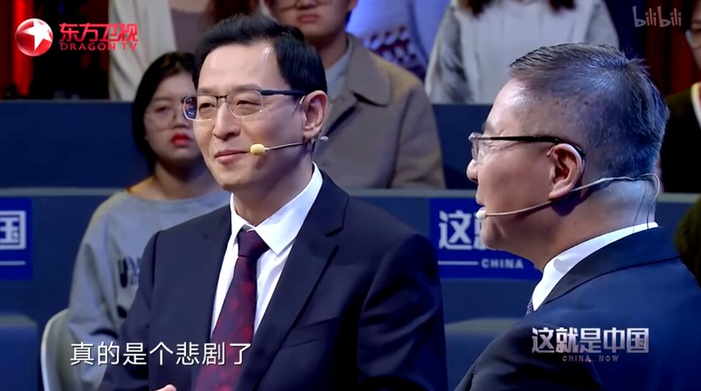

节目评价
《这就是中国》紧扣大众最关心的时事政治问题，以亲身经历和身边真实的事例作为切入点，结合中国悠久的历史和中华文明特色，通过广泛的国际比较，生动阐述中国道路和中国模式的特点和优势，让人耳目一新 。（环球网评）
《这就是中国》用代际沟通回答质疑，且把时间留给思想交锋，节目中合理的争议性也给节目带来了更多关注，其时效性也非常强，紧贴社会热点。可以说，《这就是中国》是世界格局观的一次跨学科交流，在文史哲美社等多学科中，用通俗语言提炼和归纳出了一些金句 。（中国社会科学院新闻所世界传媒研究中心秘书长冷凇评）
